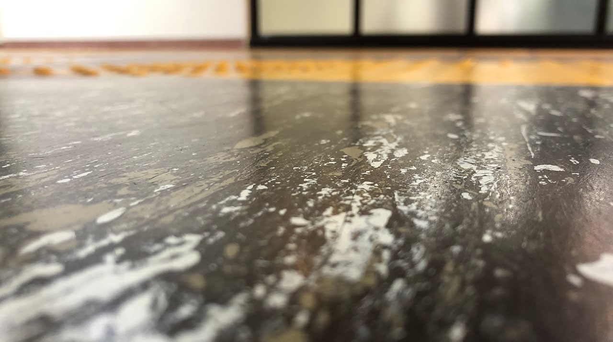
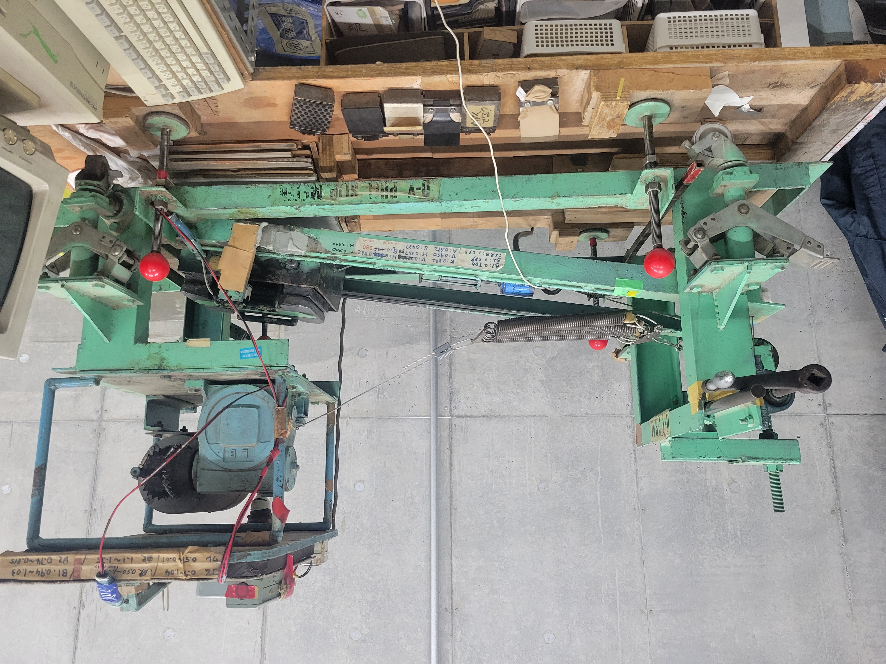
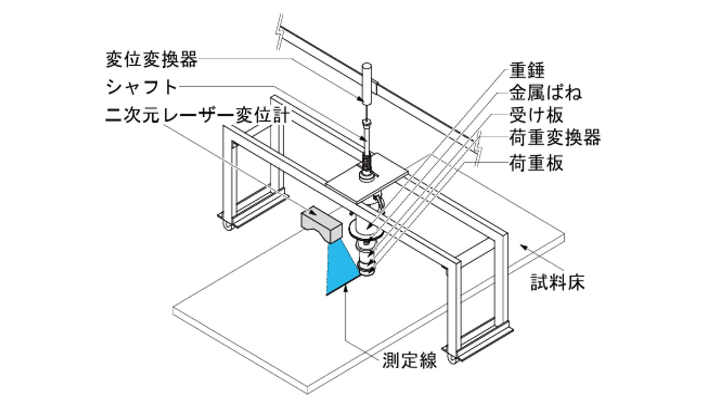
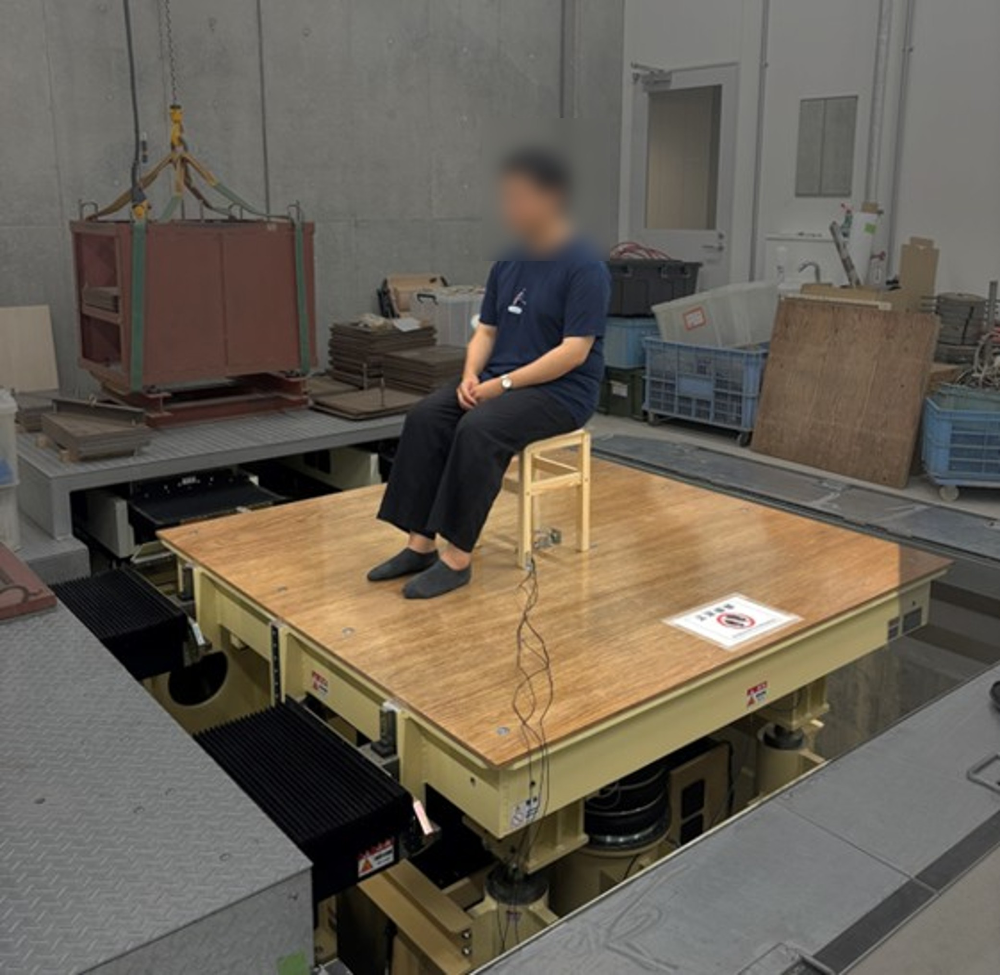

建築物利用者が安全で快適な日常を過ごすために。
床，壁，屋根，天井といった建築部位ごとに施主や使用者の要求水準を数値化して把握することで、要求に過不足なく合致する材料，工法を選択するための妥当な性能評価方法の確立や、要求品質に応じて適切な施工条件を設定するための枠組み構築を目的とした研究に取り組んでいます。
東京科学大学 環境・社会理工学院
床，壁，屋根，天井といった建築部位ごとに施主や使用者の要求水準を数値化して把握することで、要求に過不足なく合致する材料，工法を選択するための妥当な性能評価方法の確立や、要求品質に応じて適切な施工条件を設定するための枠組み構築を目的とした研究に取り組んでいます。


人々が生活する中で最も接する頻度が高い部位である床は、様々な性能が要求されます。その中でも、安全性や快適性に大きくかかわるすべり性能は肝要といえます。小野先生や横山先生によって開発されたすべり試験機(O・Y-PSM)を端緒とし、床のすべりやすさを多角的に評価します。
詳しく見る

建築物を利用する人間はその多くの時間床に接触しており、そのかたさは快適性や安全性と強く結びついています。長時間の立ち仕事や転倒した時といった状況に応じて適切な床のかたさの評価方法を確立することを目指します。
詳しく見る

地震や風による振動は建築物を建てるうえで耐久性の観点から非常に重要ですが、一方で交通振動や歩行振動などの環境振動もまた居住性の観点から配慮が必要です。そうした振動に関して、人間の振動感覚，評価に対応する性能値を探ります。
詳しく見る
福田 眞太郎
Fukuda Shintaro
profile
博士課程
Doctor Cource
0人
修士課程
Master Cource
7人
学部生
Bachelor Cource
1人
研究生
Research Student
0人
研究室見学および研究室の所属に関するご相談、また研究内容に関するお問い合わせなども随時受け付けております。
以下のEmailアドレスにお名前とご所属、お問い合わせ内容を記載の上、ご連絡ください。